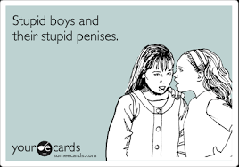
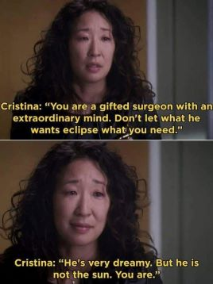
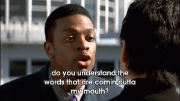
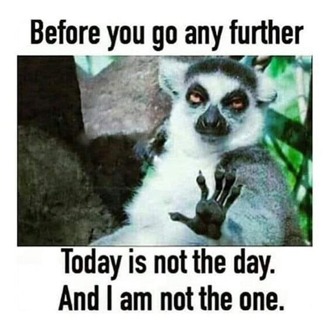

These steps are not perfect in anyways. However, they have been tried and proven effective throughout the years. It is very important to follow these steps very carefully and very thoroughly. If followed correctly, these steps will save you allot of time and heartache.
If a man is not willing to court you (yes I said court! Make his lazy ass pursue you!), then he is not worth your time. Do not lower your standards to meet his self esteem. Boys now-a-days want you to chase them, they will have you making excuses for their bad behavior for no reason. They fuck up and you try to justify it. FUCK THAT! It is time for men to stop playing childish games and to step up! Do not fall into their trap of sweet words. They are master manipulators! They will tell you what you want to hear. They will make you feel good at first, then they get lazy. Do not allow them to lower your standards!
This is a very crucial step. Tell the boy bluntly that you are not interested. Their simple mind will interpret this as you find them irresistable and that you want them to continue to pursue. This is worse than Opposite Day. There is not end to this, when too annoying just block them. Do not attempt to reason with them. I repeat do not attempt to reason, their puny little brains cannot handle this.
The silly creatures believe that they are God's gift to women. This is true, however I am still looking for the damn receipt to return to sender! Their 10 inches is more like 10 cm. Do not become penis whipped! NO SEX IS THAT GOOD!
When in doubt follow the wise words of Christina Yang: Nothing drives a boy crazy more than you knowing your worth. They will not
know how to react when they realize that they cannot easily control you or
destroy you. They will find ways to make you the bad guy. A few examples of
their toxic sayings/words are:
1.Heartless Bitch
2.Stubborn
3.He will spread lies about you, because he knows he cannot have you
4.Misleading (even though you have told him from day one you are not
interested. But hey why listen to the words coming out of our
mouths...),etc.

Two simple words, no thanks. If your really want to be classy, no thank you. This will drive the ego powered, "men" nuts! How could us, feeble minded women, possibly refuse these big powerful, irresistable "men". Wake up and smell the shit! These boys will have to just live with the rejection. Stop feeling bad or even guilty for standing your ground. At least you were not misleading.
